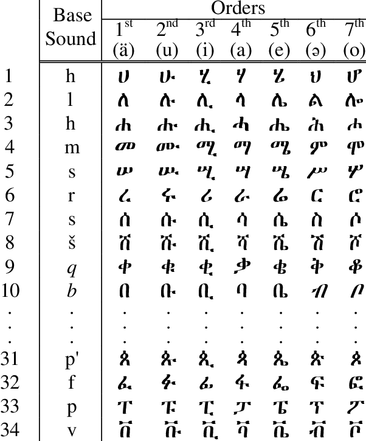
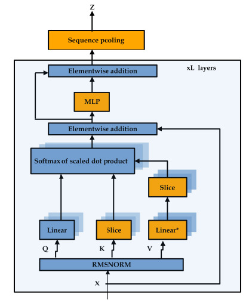
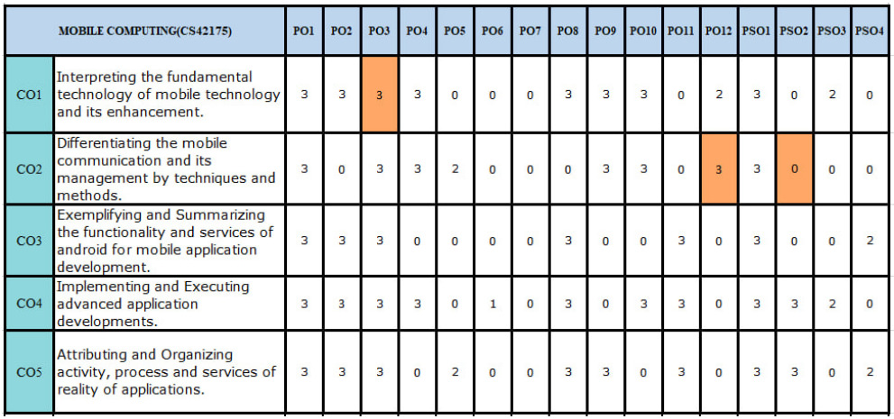
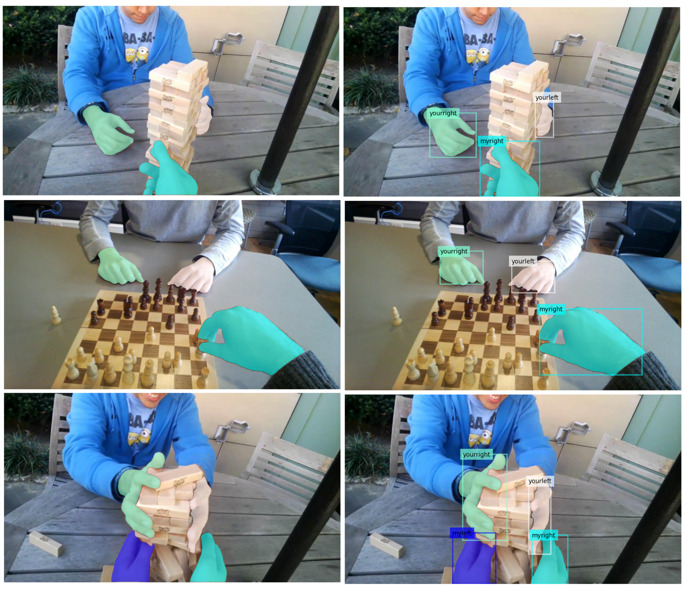
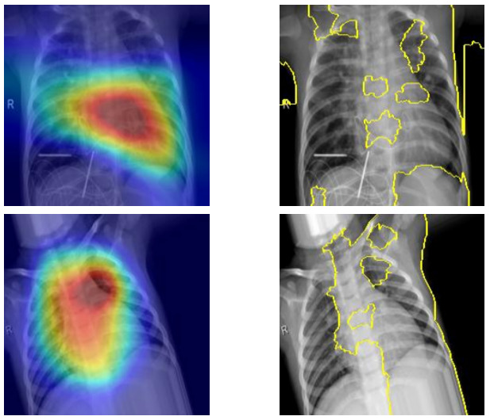
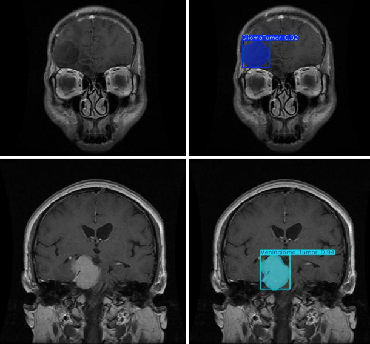

|
Natenaile Asmamaw Shiferaw I'm currently an Erasmus Mundus master's student in Intelligent Photonics for Security, Reliability, Sustainability and Safety (iPSRS) , a joint triple-degree program offered by Université Jean Monnet (France), the University of Eastern Finland (Finland), and Université Paris-Est Créteil (France). Previously, I completed my B.Tech in Computer Science and Engineering at C. V. Raman Global University, India. |
{kind=link}
ResearchMy background is in computer vision, with a strong foundation in machine learning. I am currently interested in computational imaging, 3D vision, and diffusion models. |
|

|
Handwritten Amharic Character Recognition Through Transfer Learning: Integrating CNN Models and Machine Learning Classifiers
Natenaile Asmamaw Shiferaw, Zefree Lazarus Mayaluri, Prabodh Kumar Sahoo, Ganapati Panda, Prince Jain, Adyasha Rath, MD. SHABIUL ISLAM, MOHAMMAD TARIQUL ISLAM IEEE Access, 2025 IEEE Access Combining CNN-based feature extraction with classical machine learning classifiers enables accurate and robust recognition of handwritten Amharic characters, achieving strong performance for complex and underrepresented scripts. |

|
An Efficient Baseline Restoration Circuit for Real-Time Impedance Cardiography: FPGA-Based Calibration with MultiSensor Integration
Priya Darshini Kumari, Ksh Milan Singh, Zefree Lazarus Mayaluri, Natenaile Asmamaw Shiferaw, Ganapati Panda, Sujeevan Kumar Agir JSIR, 2025 JSIR Multisensor-driven adaptive baseline correction significantly reduces motion and respiratory artifacts in impedance cardiography for reliable real-time monitoring. |
|


|
Enhancing compact convolutional transformers with super attention
Simpenzwe Honore Leandre*, Natenaile Asmamaw Shiferaw*, Dillip Rout arXiv, 2025 arXiv A token-mixing vision architecture achieves strong accuracy and efficient inference on fixed-length image tasks, outperforming attention-based transformers with improved training stability. |
|


|
BERT-Based Approach for Automating Course Articulation Matrix Construction with Explainable AI
Natenaile Asmamaw Shiferaw*, Simpenzwe Honore Leandre*, Aman Sinha, Dillip Rout arXiv, 2024 arXiv An explainable BERT-based framework accurately automates Course Articulation Matrix construction by learning semantic alignment between course and program outcomes. |
|


|
Hybrid Hand Detection and Segmentation for Ego-Centric Interaction Using YOLO (v8-v11) and RT-DETR for Detection, Followed by SAM and SAM 2 for Segmentation
Natenaile Asmamaw Shiferaw*, Zefree Lazarus Mayaluri, Prabodh Kumar Sahoo, Ganapati Panda Elsevier's Image and Vision Computing, Under review Elsevier Combining lightweight YOLO-based detection with prompt-based SAM segmentation enables accurate ego-centric hand detection and segmentation for human–robot interaction. |
|


|
Lightweight Hybrid CNN–Transformer Ensembles with Explainable AI for Lung Disease Detection from Chest X-rays
Natenaile Asmamaw Shiferaw*, Zefree Lazarus Mayaluri* IEEE JBHI, Under review IEEE JBHI An efficient, explainable CNN–ViT ensemble approach delivers high-accuracy lung disease diagnosis from chest X-ray images. |
|


|
Comparative Analysis of YOLOv8 and YOLOv11 for Brain Tumor Instance Segmentation
Natenaile Asmamaw Shiferaw*, Simpenzwe Honore Leandre*, Dillip Rout, Aman Sinha MAiTRI, 2025 (Accepted) IEEE JBHI A YOLO-based instance segmentation framework enables efficient and accurate localization and delineation of brain tumors in medical images. |


|
NExF: Learning Neural Exposure Fields for View Synthesis
Michael Niemeyer, Fabian Manhardt, Marie-Julie Rakotosaona, Michael Oechsle, Christina Tsalicoglou, Keisuke Tateno, Jonathan T. Barron, Federico Tombari NeurIPS, 2025 project page / arXiv Learning a neural field that optimizes exposure for each 3D point enables high-quality 3D-consistent view synthesis despite extreme exposure variation during capture. |
Miscellanea |
|
Feel free to steal this website's source code. Do not scrape the HTML from this page itself, as it includes analytics tags that you do not want on your own website — use the github code instead. Also, consider using Leonid Keselman's Jekyll fork of this page. |